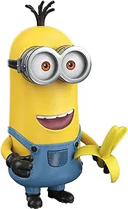
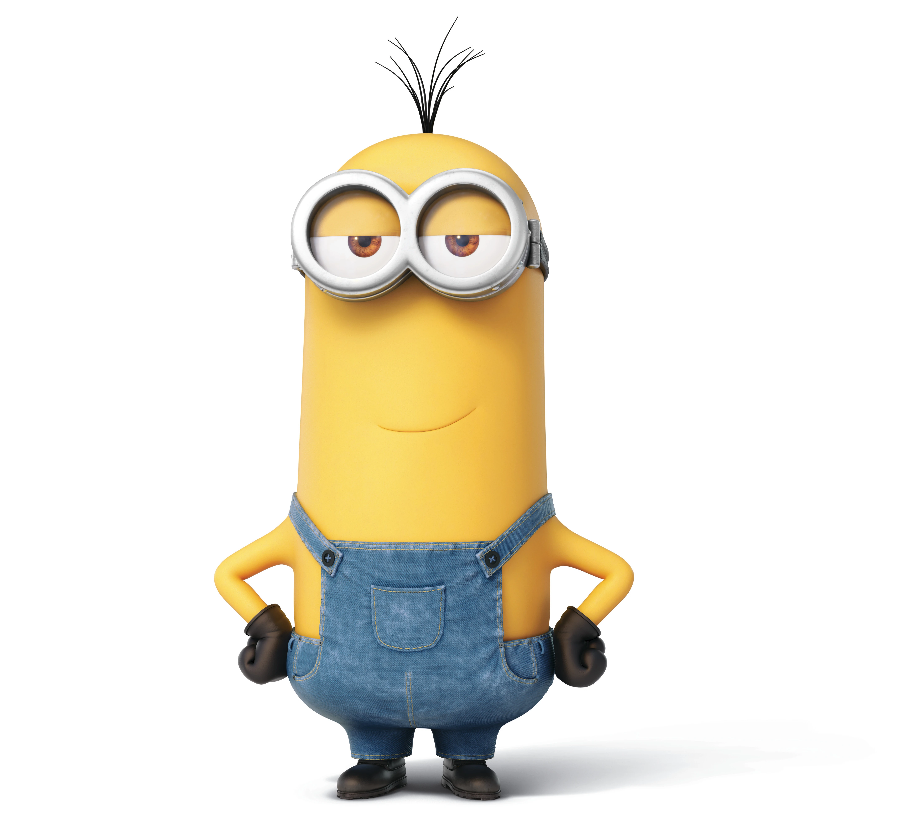

Kevin (temporarily known as Sir Kevin) - a very tall and scary minion.
He thinks he’s the boss, but he is a MINION and all he can do is SERVE a LEADER.
If you want to be a leader, grow a spine and take charge.
If not for Nefarious Gru, you wouldn’t have gotten anywhere.